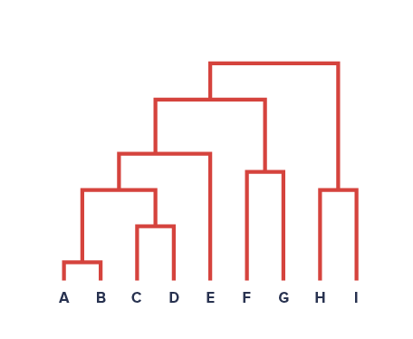

Hierarchical Clustering
It’s not wildly off base to remark that a dendrogram, the visual result of Hierarchical Clustering, looks sort of like a Decision Tree, but in reverse.
(Pulled from Google Images)
from IPython.display import Image
Image('images/dendrogram.PNG')
But whereas the Decision Tree starts from all points collected together and making successive splits to separate the data, Hierarchical Clustering starts with all disjoint points and iteratively finds groupings of similar points.
Algorithm
Actually performing Hierarchical Clustering all begins with some measure of “dissimilarity.” For the dataset below, we might consider the pairwise Euclidean Distance from point to point
Image('images/fig_10_8.PNG')
Then we do the following (per ISL) until we’ve blobbed together every point:
1. Make each point its own unique cluster
2. While len(clusters) > 1:
a. Examine all inter-cluster, pairwise dissimilarities
b. Find the smallest value between two clusters
c. Fuse them into one cluster
d. Compute the new pairwise, inter-cluster dissimilarities
And if you’ve got a dissimlarity measure picked out, the first step of this (for all n distinct points) is pretty trivial. However, when you graduate to multi-point clusters, it requires more thought.
From here, step 2d requires you to pick a linkage function for handling cluster vs cluster calculation. Summarizing the popular methods, we have:
- Complete: Compute all pairwise dissimilarities and take the max.
- Single: Compute all pairwise dissimilarities and take the min.
- Average: Compute all pairwise dissimilarities and take the average.
- Centroid: Average the points in each cluster, then compute the pairwise dissimilarity
Complete and Average are said to make for more balanced trees than Single, as shown below.
Image('images/fig_10_12.PNG')
Finally, we can draw a horizontal line at any of various levels along the dendrogram to arrive at m different groups. The closer two terminal points are to one another, vertically, the more similar they are.
Note: There is no concept of horizontal similarity when looking at these visuals. It’s merely a product of how the graphics are built.
Considerations
Dissimilarity Measure
In the example above, we used Euclidean Distance as our measure for dissimilarity. However, ISL presents a compelling example to consider other statistics.
Take a hypothetical Amazon dataset, for instance. If each row is a user of the site and each column represents the quantity of purchases for a given item, then we wind up with a very sparse dataset. Working with other clustering algorithms such as K-Means or KNN, we know that this leads quickly to the curse of dimensionality.
Suppose instead, we used Correlation between two clients. This could afford insight into overlaps of cross-product preferences in a way that simple distance cannot.
Scaling Features
Extending this shopping example, the following 3 charts represent the same two features, but scaled differently
Image('images/fig_10_14.PNG')
As you can see, feature normalization can have a huge impact on how your algorithm churns through your data (the last panel is count * cost)